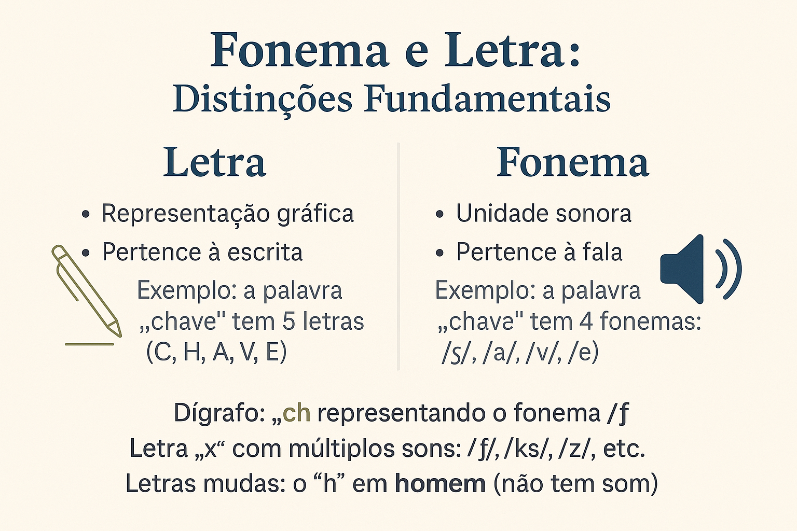

Fonema e Letra: Uma distinção fundamental na análise linguística
No estudo científico da linguagem verbal, a distinção entre fonema e letra constitui o divisor de águas entre a Linguística moderna e as concepções pré-científicas herdadas da gramática tradicional. Embora o senso comum frequentemente trate esses termos como sinônimos intercambiáveis, eles operam em estratos ontológicos e funcionais radicalmente distintos: o fonema situa-se no plano fônico e cognitivo da língua oral, enquanto a letra habita o plano gráfico e convencional da escrita alfabética.
A confusão entre a materialidade gráfica da escrita e a substância sonora da fala gera distorções tanto na alfabetização quanto na análise linguística formal. Escrever não é "desenhar sons", e o alfabeto latino — concebido há milênios para registrar línguas da família itálica — jamais foi nem pretende ser um espelho acústico transparente do português. Pelo contrário: entre a acústica articulada pelos falantes e os caracteres registrados no papel ou nas telas, interpõe-se uma trama histórica e normativa repleta de assimetrias.
Neste artigo fundamentado na Fonologia Estrutural e no Funcionalismo Linguístico, exploraremos a definição conceitual do fonema enquanto unidade mental mínima distintiva, a natureza da letra enquanto artefato técnico da ortografia, as causas históricas e articulatórias das assimetrias entre som e escrita (dígrafos, dífonos e polivalências), o método de comutação e os pares mínimos, além de aplicações práticas para exames e sequências didáticas na Educação Básica.

A virada fonológica: do som físico à entidade abstrata
Até o final do século XIX, os estudos da linguagem concentravam-se no aspecto físico e fisiológico dos sons — domínio que hoje conhecemos como Fonética. Foi somente com Ferdinand de Saussure (1916) e, mais tarde, com a fundação do Círculo Linguístico de Praga por Roman Jakobson e Nikolai Trubetzkoy (1939), que a Linguística estabeleceu a autonomia da Fonologia, compreendendo os sons a partir de seu papel funcional no sistema da língua.
O som em sua concretude articulatória e acústica é chamado de fone, representado na transcrição linguística entre colchetes ([p], [b], [tʃ]). Já o fonema, representado convencionalmente entre barras oblíquas (/p/, /b/, /t/), é uma entidade mental, abstrata e funcional. Dois sons acusticamente distintos para um aparelho de laboratório podem ser percebidos e processados pelos falantes de uma dada comunidade como realizações variantes do mesmíssimo fonema.
A natureza funcional do fonema na tradição brasileira
Para Joaquim Mattoso Câmara Jr. (1970, p. 29), pioneiro da Linguística descritiva no Brasil: “A fonologia não se interessa pelos sons da fala em sua realidade física, mas pela função que exercem no sistema linguístico”. Em outras palavras, o fonema não tem significado próprio em si mesmo, mas tem a propriedade exclusiva de instaurar distinção de significado entre signos linguísticos.
Como complementa Luiz Carlos Cagliari (2009), “o fonema não é o som em si, mas a representação mental do som que usamos para distinguir significados”. Quando um falante carioca pronuncia a palavra tia com a oclusiva palatalizada [tʃi.ɐ] e um falante do interior paulista ou gaúcho pronuncia com a oclusiva dental pura [ti.ɐ], ambos estão concretizando alofones (variantes fonéticas) do mesmo e único fonema /t/, uma vez que essa alternância de sotaque não gera uma palavra diferente no português.
Plano fônico versus plano gráfico: as assimetrias constitutivas
Para desconstruir a ilusão de correspondência perfeita entre escrita e fala, é indispensável contrapor as propriedades intrínsecas de cada sistema:
Plano Fônico (Fonemas e Fones)
Manifestação primária e natural da faculdade humana da linguagem. Adquirido de forma espontânea na primeira infância pelo convívio na comunidade de fala.
Natureza: Acústica, temporal, articulatória e dinâmica.
Unidade funcional: O fonema (/ /), unidade mental mnêmica e opositiva.
Universalidade: Presente em todas as sociedades humanas conhecidas.
Plano Gráfico (Grafemas e Letras)
Construção cultural secundária e tecnológica. Exige ensino formal, sistemático e deliberado para ser assimilado e decodificado pelo indivíduo.
Natureza: Visual, espacial, estática e convencional.
Unidade funcional: O grafema (< > ou letra), elemento arbitrário de registro.
Normatização: Fixada por decretos ortográficos e acordos políticos.
A escrita alfabética é um sistema de codificação secundário criado para conferir durabilidade temporal e alcance espacial à palavra falada. Todavia, a evolução fonológica das línguas orais ocorre em ritmo muito mais veloz do que as reformas ortográficas. Por essa razão, a ortografia tende a conservar grafias etimológicas fossilizadas há séculos, afastando-se irremediavelmente de uma relação biunívoca (isto é, de uma relação ideal de 1 letra para 1 som).
As assimetrias do sistema ortográfico do Português Brasileiro
No português, a ausência de correspondência biunívoca entre letras e fonemas desdobra-se em quatro grandes fenômenos estruturais:
1. Dígrafos: duas letras representando um único fonema
Ocorre quando uma sequência de dois grafemas coalesce para representar um único segmento fônico indivisível. Os dígrafos classificam-se em:
- Dígrafos consonantais: ch (/ʃ/ em chave), lh (/ʎ/ em filho), nh (/ɲ/ em ninho), rr (/ʁ/ em carro), ss (/s/ em passo), sc (/s/ em nascer), sç (/s/ em desço), xc (/s/ em exceção), gu (/g/ diante de e/i em guerra) e qu (/k/ diante de e/i em queijo);
- Dígrafos vocálicos (ou nasais): junção de uma vogal com as consoantes m ou n em final de sílaba, indicando que a vogal precedente é nasalizada: am/an (/ã/ em canto), em/en (/ẽ/ em vento), im/in (/ĩ/ em limpo), om/on (/õ/ em ponte) e um/un (/ũ/ em fundo). Nessas estruturas, m e n não configuram fonemas consonantais autônomos, mas mero sinal gráfico diacrítico de nasalidade.
2. Dífono: uma letra representando dois fonemas simultâneos
O fenômeno inverso ao dígrafo é o dífono. No português contemporâneo, esse caso manifesta-se tipicamente com a letra X assumindo valor fonético de oclusiva velar surda seguida de fricativa alveolar surda (/ks/), como em tóxico (/t-ɔ-k-s-i-k-u/), anexo (/a-n-ɛ-k-s-u/), táxi (/t-a-k-s-i/) e fixo (/f-i-k-s-u/). Nesses vocábulos, o número de fonemas supera o número de letras.
3. Letra etimológica sem realização fônica (letra muda)
A letra H no início de palavras (como em homem, hora, hoje, hálito) representa uma sobrevivência etimológica do latim e do grego que não possui qualquer realização acústica ou fonêmica no português contemporâneo. A palavra hora possui 4 letras, mas apenas 3 fonemas (/ɔ-ɾ-a/).
4. Polivalência gráfica e fonêmica
Uma mesma letra pode representar diferentes fonemas, e um mesmo fonema pode ser grafado por múltiplas letras distintas:
- A letra X representa quatro fonemas distintos: /ʃ/ em xadrez; /z/ em exame; /s/ em texto; e /ks/ em complexo; além de poder soar como /s/ intervocálico em próximo;
- O fonema /s/ pode ser grafado por pelo menos oito formas: s (sapo), ss (massa), c (cedo), ç (praça), sc (piscina), sç (cresço), xc (excelente) e x (máximo).
| Fenômeno Ortográfico-Fonológico | Palavra Exemplo | Contagem de Letras | Transcrição Fonêmica Ampla | Contagem de Fonemas | Balanço Estrutural |
|---|---|---|---|---|---|
| Dígrafo consonantal | chuva | 5 letras (c-h-u-v-a) | /ʃ-u-v-a/ | 4 fonemas | Letras > Fonemas |
| Dígrafo vocálico (nasal) | campo | 5 letras (c-a-m-p-o) | /k-ã-p-u/ | 4 fonemas | Letras > Fonemas |
| Dois dígrafos combinados | guerreiro | 9 letras (g-u-e-r-r-e-i-r-o) | /g-e-ʁ-e-j-ɾ-u/ | 7 fonemas | Letras > Fonemas |
| Dífono (/ks/) | táxi | 4 letras (t-á-x-i) | /t-a-k-s-i/ | 5 fonemas | Fonemas > Letras |
| Letra muda inicial | hábito | 6 letras (h-á-b-i-t-o) | /a-b-i-t-u/ | 5 fonemas | Letras > Fonemas |
| Correspondência biunívoca | pipoca | 6 letras (p-i-p-o-c-a) | /p-i-p-ɔ-k-a/ | 6 fonemas | Letras = Fonemas |
O teste da comutação e os pares mínimos: a prova da existência do fonema
Como a Linguística comprova que uma dada unidade sonora é, de fato, um fonema em um idioma? O método empírico consagrado por Trubetzkoy é a prova da comutação através do estabelecimento de pares mínimos.
Um par mínimo consiste em duas palavras idênticas em toda a sua estrutura fônica, exceto por um único som em idêntica posição sintagmática. Se a troca (comutação) desse único elemento alterar o significado da palavra, prova-se cientificamente que o elemento em questão é um fonema dotado de valor distintivo:
- /p/ versus /b/: em /p/ata e /b/ata, a oposição reside exclusivamente no traço de vozeamento (cordas vocais relaxadas versus vibrando). Essa oposição basta para produzir dois conceitos diferentes; logo, /p/ e /b/ são fonemas autônomos no português;
- /f/ versus /v/: /f/aca e /v/aca (fricativa labiodental surda versus sonora);
- /t/ versus /d/: /t/ia e /d/ia (oclusiva dental surda versus sonora);
- /k/ versus /g/: /k/alo e /g/alo (oclusiva velar surda versus sonora).
A falácia do "escrever como se fala" e o preconceito linguístico
Exigir de uma criança em fase de alfabetização ou de um falante escolarizado que "escreva exatamente como fala" é uma contradição epistêmica. Como a fala é viva, dialetalmente heterogênea e rica em variações geográficas e sociais, nenhuma escrita alfabética reflete a fala com precisão literal. Classificar grafias como "pobrema" ou "menas" como frutos de "preguiça fonética" ignora que o sistema fonológico segue regras sistemáticas de assimilação e simplificação, e que a ortografia é uma convenção externa arbitrária imposta à oralidade.
Análise fonológica na prática: dissecação passo a passo de palavras
A seguir, analisamos casos clássicos de vestibulares e concursos públicos nos quais a contagem de letras e fonemas costuma gerar equívocos:
Caso 1: Vocábulo "Nenhum"
Estrutura ortográfica: 6 letras (n - e - n - h - u - m).
Segmentação fonológica:
- /n/ = fonema consonantal oclusivo nasal;
- /ẽ/ = vogal nasal decorrente da assimilação;
- /ɲ/ = fonema nasal palatal representado pelo dígrafo consonantal nh;
- /ũ/ = vogal nasal representada pelo dígrafo vocálico final um.
Resultado: 6 letras e 4 fonemas (/n-ẽ-ɲ-ũ/).
Caso 2: Vocábulo "Tóxicos"
Estrutura ortográfica: 7 letras (t - ó - x - i - c - o - s).
Segmentação fonológica: A letra x atua como dífono, materializando os fonemas /k/ + /s/.
Resultado: 7 letras e 8 fonemas (/t-ɔ-k-s-i-k-u-s/).
Caso 3: Vocábulo "Exceção"
Estrutura ortográfica: 7 letras (e - x - c - e - ç - ã - o).
Segmentação fonológica:
- O encontro xc forma dígrafo consonantal com valor de /s/;
- A letra e inicial soa como /e/;
- A letra ç soa como /s/;
- O encontro ão forma ditongo nasal decrescente /ãw̃/.
Resultado: 7 letras e 6 fonemas (/e-s-e-s-ã-w̃/).
Esquema pedagógico: o itinerário da análise fonológico-gráfica
O ciclo analítico do estudante e pesquisador
Registro visual da palavra (inventário ortográfico das letras) → Rastreamento de elementos diacríticos e mudos (isolamento do H inicial) → Mapeamento de dígrafos (consonantais e vocálicos nasais) → Identificação de dífonos (ocorrência do X com som /ks/) → Transcrição fonêmica (aplicação dos símbolos entre barras / /) → Balanço comparativo final (número de grafemas versus número de fonemas).
Questões para estudo e fixação
Questão 1 (Conceitual / Concurso Público)
Assinale a alternativa que explica corretamente por que dois sons acusticamente distintos podem ser classificados sob o mesmo fonema na Língua Portuguesa:
A) Porque a ortografia oficial impõe a fusão dos sons em uma única regra gramatical.
B) Porque a Fonologia lida com os aspectos fisiológicos universais da laringe e dos pulmões.
C) Porque, no sistema da língua, tais sons atuam como variantes alofônicas livres ou posicionais sem capacidade de comutação semântica.
D) Porque qualquer som emitido na fala é automaticamente uma cópia fiel de uma letra do alfabeto latino.
Ver resposta comentada
Resposta comentada: Alternativa C. Na análise fonológica, as variações acústicas que não provocam distinção de significado entre palavras (como a pronúncia de [t] ou [tʃ] em tia) constituem alofones de um mesmo fonema. O que define o estatuto de fonema é sua função opositiva e contrastiva dentro do sistema linguístico de uma comunidade, e não suas minúcias acústicas de laboratório.
Questão 2 (Análise Contrastiva Letras vs. Fonemas)
Considere as seguintes palavras: 1. Habilidade; 2. Enxame; 3. Táxi; 4. Guerra. Quantos fonemas e quantas letras apresenta cada uma, respectivamente?
Ver resposta comentada
Resposta comentada:
1. Habilidade: 10 letras e 9 fonemas (/a-b-i-l-i-d-a-d-i/), pois o H inicial não tem som.
2. Enxame: 6 letras e 5 fonemas (/ẽ-ʃ-ã-m-i/), pois en constitui dígrafo vocálico nasal (/ẽ/).
3. Táxi: 4 letras e 5 fonemas (/t-a-k-s-i/), pois a letra X é dífono (/ks/).
4. Guerra: 6 letras e 4 fonemas (/g-ɛ-ʁ-a/), pois apresenta dois dígrafos consonantais: gu (/g/) e rr (/ʁ/).
Questão 3 (Oposição e Par Mínimo)
Qual dos pares de vocábulos a seguir NÃO constitui um par mínimo na Fonologia do Português Brasileiro?
A) Pato / Bato.
B) Canto / Manto.
C) Selo / Zelo.
D) Casa / Prédio.
Ver resposta comentada
Resposta comentada: Alternativa D. Um par mínimo requer que os vocábulos compartilhem rigorosamente todos os segmentos sonoros, diferenciando-se apenas em um único fonema na mesma posição sintagmática. Entre casa (/k-a-z-a/) e prédio (/p-ɾ-ɛ-d-i-u/), todos os fonemas são inteiramente distintos, inexistindo relação de par mínimo. Nas demais opções, opõem-se apenas /p/ e /b/, /k/ e /m/, e /s/ e /z/.
Questão 4 (Dígrafos Vocálicos e Transcrição)
Na palavra "transporte", por que o segmento an não é computado como encontro consonantal com a letra s subsequente?
Ver resposta comentada
Resposta comentada: Porque a letra n pós-vocálica não representa uma consoante fonológica articulada; ela funciona apenas como marca gráfica diacrítica de nasalização da vogal precedente (/t-ɾ-ã-s-p-ɔ-ʁ-t-ʃ-i/). Trata-se, portanto, de um dígrafo vocálico (/ã/) seguido pelo fonema consonantal /s/. Na língua falada, não há articulação da consoante nasal /n/ nesse ambiente silábico.
Questão 5 (Implicações Pedagógicas)
Por que a compreensão da distinção entre fonema e letra é indispensável para combater o preconceito linguístico no ambiente escolar?
Ver resposta comentada
Resposta comentada: Porque permite que o professor compreenda que os "erros" ortográficos cometidos pelos estudantes nos anos iniciais decorrem de hipóteses cognitivas legítimas baseadas na oralidade. Ao entender que a escrita é uma convenção histórica cheia de irregularidades arbitrárias — e não um retrato fiel da fala —, o educador aborda a ortografia como um código social a ser adquirido, e não como um atestado de deficiência intelectual ou moral do aluno.
Resumo da distinção entre fonema e letra
- Fonema é a menor unidade sonora distintiva e mental de uma língua;
- Letra é a representação gráfica, convencional e ortográfica de um fonema;
- O plano fônico é natural, dinâmico e oral; o plano gráfico é cultural, histórico e estático;
- A relação entre letra e fonema no português é assimétrica (não biunívoca);
- Dígrafo reúne duas letras para um único fonema (ex.: carro, canto);
- Dífono representa uma letra correspondendo a dois fonemas sucessivos (ex.: táxi = /ks/);
- A letra H inicial em palavras portuguesas não possui representação fonêmica;
- O par mínimo e o teste da comutação constituem o método científico que valida a autonomia de um fonema.
Perguntas frequentes sobre fonemas e letras
Qual é a diferença elementar entre fonema e fone?
O fone é a realização sonora física, concreta e mensurável acusticamente pela Fonética. O fonema é a unidade psíquica abstrata estudada pela Fonologia, definida pelo papel distintivo que desempenha no sistema da língua.
Por que uma palavra pode ter mais letras do que fonemas?
Isso ocorre devido à presença de dígrafos consonantais (como rr, ss, ch), dígrafos vocálicos/nasais (como am, en) ou letras etimológicas mudas (como o h inicial). Em todos esses casos, duas ou mais letras representam apenas um som, ou nenhum som.
Em que situação uma palavra terá mais fonemas do que letras?
Quando contiver um dífono, fenômeno em que a letra x soa como a consoante dupla /ks/ (ex.: fixo tem 4 letras e 5 fonemas; anexo tem 5 letras e 6 fonemas).
O "M" e o "N" no final de sílaba são considerados consoantes?
Fonologicamente, não. Quando aparecem no final de sílaba após vogal (em campo, tampa, canto), funcionam como sinal de nasalidade da vogal antecedente, formando dígrafos vocálicos nasais (/ã/, /ẽ/, /ĩ/, /õ/, /ũ/).
O que são alofones?
São variantes fonéticas de um mesmo fonema que não alteram o sentido da palavra. No Brasil, pronunciar o d de dia como [d] oclusivo ou como [dʒ] africado representa dois alofones do fonema /d/.
Por que a escrita do português não é 100% fonética?
Porque a ortografia do português é etimológico-histórica. Ela conserva elementos de suas raízes latinas e gregas e foi padronizada politicamente para garantir a unidade de leitura entre diferentes países e regiões de fala lusófona.
Como identificar se "qu" e "gu" são dígrafos?
Basta verificar se a letra u é pronunciada. Em guerra e queijo, o u não é pronunciado, configurando dígrafo. Já em água, quase e cinquenta, o u é pronunciado como semivogal (/w/), não havendo dígrafo.
Por que o estudo de fonema e letra é cobrado com tanta frequência em concursos?
Porque avalia a capacidade do candidato de transcender a mera decodificação visual e demonstrar domínio analítico sobre a estrutura fônica real da Língua Portuguesa e suas convenções normativas.
Considerações finais
Compreender a distinção entre fonema e letra é mais do que um pré-requisito técnico para classificar encontros sonoros e sílabas na gramática escolar: é um exercício primordial de letramento científico e metalinguístico. Ao separar o plano fônico abstrato do plano gráfico convencional, o estudante e o educador superam a ilusão de que a escrita comanda a fala, restabelecendo a primazia da oralidade como manifestação biológica e sociocultural originária da linguagem.
Dominar essa fronteira conceitual capacita o falante a enxergar as irregularidades ortográficas não como "defeitos" a serem memorizados por castigo, mas como testemunhos vivos da história da língua portuguesa. Com isso, promove-se uma pedagogia da linguagem muito mais empática, científica e eficaz, capaz de formar cidadãos conscientes da complexidade de seu próprio idioma.
Conteúdos relacionados
- Fonologia: fonemas, sílabas e estrutura sonora da Língua Portuguesa — Índice de Conteúdos
- Tipos de Fonemas: Vogais, Semivogais e Consoantes
- Encontros Vocálicos e Consonantais: Quando os sons se encontram
- Classificação Fonética Detalhada das Vogais
- Hiatos, Ditongos e Tritongos: como identificar e exemplos
- O Som das Palavras: Sílaba, Tonicidade e Prosódia
- Fonologia e Fonética: distinções conceituais
- Fonologia das Semivogais (Glides / Semiconsoantes)
- Processo de Elisão (ou Supressão) de Segmentos Fonológicos
Referências
- CAGLIARI, Luiz Carlos. Alfabetização e Linguística. 10. ed. São Paulo: Scipione, 2009.
- CÂMARA JR., Joaquim Mattoso. Estrutura da Língua Portuguesa. Petrópolis: Vozes, 1970.
- CÂMARA JR., Joaquim Mattoso. Problemas de Linguística Descritiva. 18. ed. Petrópolis: Vozes, 2004.
- CRYSTAL, David. A Dictionary of Linguistics and Phonetics. 6. ed. Oxford: Blackwell Publishing, 2008.
- DUBOIS, Jean et al. Dicionário de Linguística. Tradução de Izidoro Blikstein. São Paulo: Cultrix, 2014.
- JAKOBSON, Roman. Seis lições sobre o som e o sentido. Lisboa: Moraes Editores, 1977.
- SAUSSURE, Ferdinand de. Curso de Linguística Geral. 28. ed. São Paulo: Cultrix, 2012.
- SILVA, Thaïs Cristófaro. Fonética e Fonologia do Português: roteiro de estudos e guia de exercícios. 10. ed. São Paulo: Contexto, 2010.
- TRUBETZKOY, Nikolai S. Principes de phonologie. Traduction de J. Cantineau. Paris: Klincksieck, 1949.
Explore outros conteúdos
Continue seus estudos acessando outras seções do site Mestre Kira: